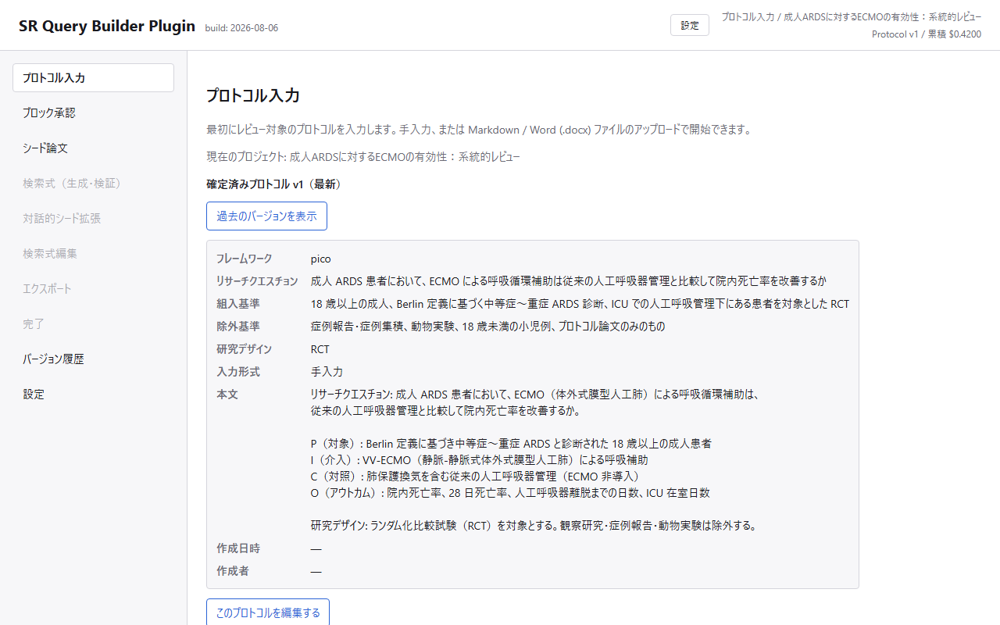
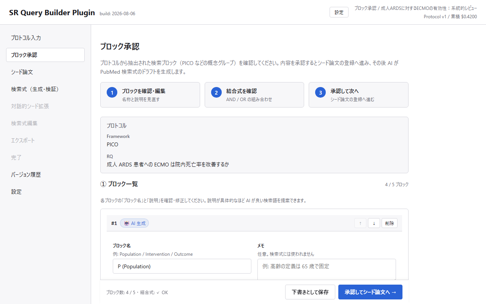
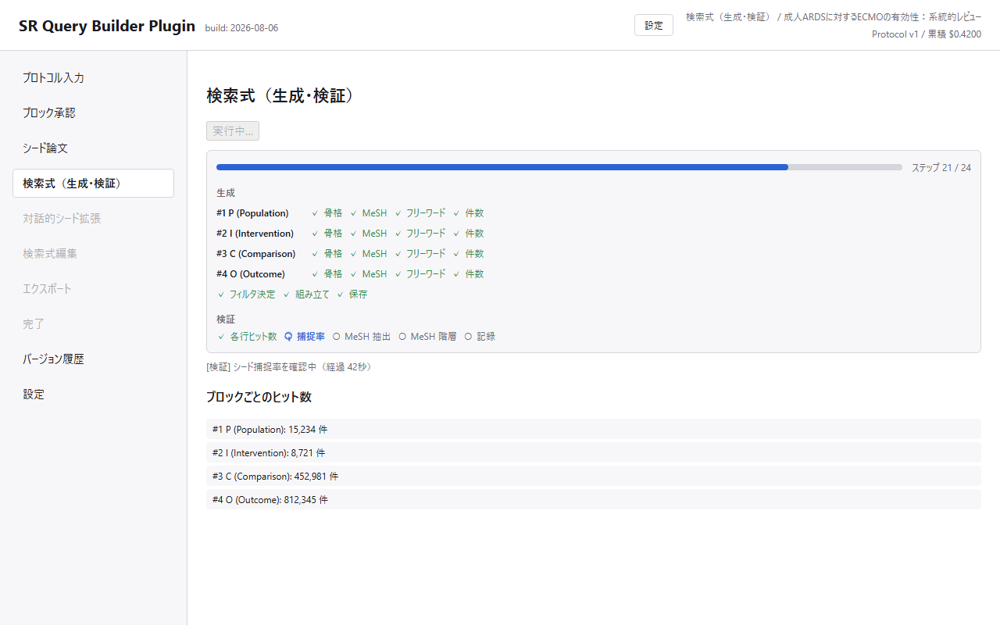
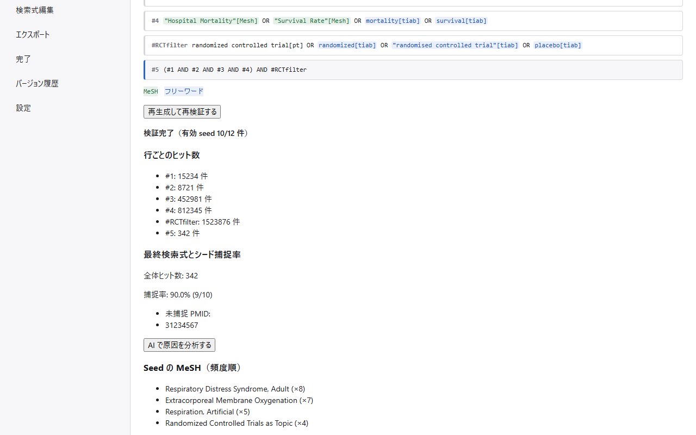
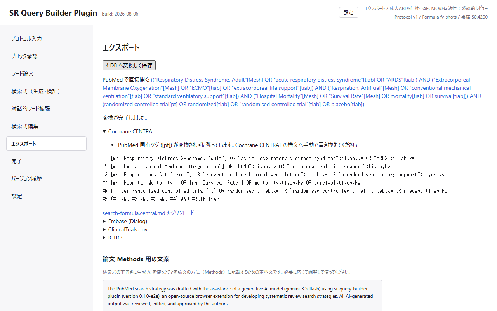

操作解説動画 Video walkthrough
研究プロトコルの入力から検証済み検索式のエクスポートまでを、実際の画面で通して解説しています（約 21 分・全 14 章）。説明欄のチャプターから各工程へ頭出しできます。ナレーションは日本語、英語字幕（CC）付きです。 A full walkthrough on the real screens, from entering a research protocol to exporting a validated search strategy (about 21 minutes, 14 chapters). Use the chapters in the video description to jump to a step. Narration is in Japanese with English subtitles (CC).
なにをするツールか What it does
-
研究プロトコル（リサーチクエスチョン・PICO 等）を入力します（手入力 /
.mdファイル）。 Enter your research protocol (research question, PICO, …) by hand or import it from a.mdfile. - 生成 AI（Gemini、BYOK）が、プロトコルから PubMed 検索式のドラフトを作成します。 Generative AI (Gemini, BYOK) drafts a PubMed search strategy from the protocol.
- NCBI E-utilities を使い、ブロックごとのヒット数・シード論文の捕捉率・MeSH 用語をライブ検証します。 NCBI E-utilities validate the draft live: per-block hit counts, seed-paper capture rate, and MeSH terms.
- （実験的機能）境界事例となりそうなシード論文候補を対話的に提示し、include / exclude 判定で検索式を最適化します。 (Experimental) Borderline seed-paper candidates are presented interactively; your include / exclude decisions refine the query.
- 最終検索式を CENTRAL / Embase(Dialog) / ClinicalTrials.gov / ICTRP 向けに変換して出力し、PubMed の nbib ダウンロードなどへ案内します。 The final query is converted for CENTRAL / Embase (Dialog) / ClinicalTrials.gov / ICTRP, with guidance to the PubMed nbib download.
画面イメージ Screenshots





画像はテスト用データで、実データは含みません。 The screenshots use test data only; no real study data is shown.
サーバーレス構成（BYOK） Serverless by design (BYOK)
開発者が運用するサーバーは存在しません。データは、利用者自身の Google アカウントと、利用者が自分の API キーで契約する Gemini API / NCBI API の間でのみ流通します。 There is no developer-operated server. Your data flows only between your own Google account and the Gemini API / NCBI API you use with your own key.
保存先はあなたの Google アカウント Stored in your Google account
プロジェクト DB は Google Sheets、LLM API ログの実体は Google Drive に置かれます。 The project database is a Google Sheet; LLM API log files live in your Google Drive.
要求する OAuth スコープは 1 つだけ Only one OAuth scope
「drive.file」のみ。Drive 全体や全スプレッドシートを読む権限は要求しません。
Just drive.file — never full Drive or all-spreadsheet access.
BYOK の API キー Bring your own API keys
検索式ドラフト生成は Gemini API のキー、NCBI API キーは検証時のレート制限緩和用（任意）です。キーはブラウザ内にのみ保存されます。 A Gemini API key drafts your search strategy; an NCBI API key (optional) eases rate limits during validation. Keys never leave your browser.
MIT ライセンスの OSS MIT-licensed open source
ソースコードは GitHub で公開しています。 The source is public on GitHub.
はじめかた Getting started
本拡張は現時点で Chrome ウェブストア未公開です。GitHub からソースを取得し、自分でビルドして読み込みます。 Google ログインまで通すには、利用者自身の Google Cloud OAuth クライアント ID を発行して設定する必要があります（後述）。 The extension is not yet published on the Chrome Web Store. Get the source from GitHub and build it yourself. To get Google sign-in working, you’ll need to issue and configure your own Google Cloud OAuth client ID (see below).
-
GitHub リポジトリを取得し、
npm installを実行します。 Clone the GitHub repository and runnpm install. -
Google Cloud Console で OAuth クライアント ID（種類: Chrome
拡張機能。コンソールの表記が「Chrome App」になっている場合もあります）を発行します。アプリケーション
ID には
bckokafmjighegpjiocopkagghppnjldを指定してください。これはsrc/manifest.jsonに固定の公開鍵（key）が含まれているため、誰の環境でビルドしてもこの値になります（手順4のnpm run devはこの鍵を残したままビルドするので拡張 ID が固定されます。鍵を取り除くのは本番ビルドのnpm run buildの方で、この手順では使いません）。OAuth 同意画面は要求スコープが非センシティブなdrive.fileのみのため Google の追加審査は不要ですが、画面自体（アプリ名・サポートメール等）の設定は必要です。 In Google Cloud Console, issue an OAuth client ID of type “Chrome Extension” (some versions of the console label this “Chrome App”), usingbckokafmjighegpjiocopkagghppnjldas the application ID. This value is fixed becausesrc/manifest.jsonships with a pinned public key (key), so it’s the same regardless of who builds it (step 4’snpm run devkeeps this key in the build, which is exactly why the extension ID stays fixed — it’s the production build,npm run build, that strips the key, and this guide doesn’t use that). The OAuth consent screen only needs to request the non-sensitivedrive.filescope, so no extra Google verification is required — but you do still need to fill in the basics (app name, support email, etc.). -
リポジトリ直下に
.envを作成し（.env.exampleを参考に）、発行したクライアント ID をOAUTH_CLIENT_ID（またはLOCAL_OAUTH_CLIENT_ID）に設定します。 Create a.envat the repository root (see.env.example) and set the client ID you issued asOAUTH_CLIENT_ID(orLOCAL_OAUTH_CLIENT_ID). -
npm run devを実行してdist/を生成します（本番ビルドのnpm run buildは使わないでください。.envにOAUTH_CLIENT_IDが無いとエラーで停止するうえ、manifest からkeyを取り除くため拡張 ID が変わってしまい、手順2で発行した OAuth クライアント ID と一致しなくなります）。 Runnpm run devto producedist/(do not use the production build,npm run build: it fails withoutOAUTH_CLIENT_IDin.env, and it also stripskeyfrom the manifest, which changes the extension ID so it no longer matches the OAuth client ID you issued in step 2). -
chrome://extensionsでデベロッパーモードを有効にし、「パッケージ化されていない拡張機能を読み込む」でdist/を選びます。 Enable developer mode atchrome://extensionsand loaddist/via “Load unpacked”. - 拡張の Options 画面で、ご自身の Gemini API キー（必須）と NCBI API キー（任意）を保存します（BYOK）。 Save your own Gemini API key (required) and NCBI API key (optional) in the extension options (BYOK).
- Google アカウントでログインし、プロジェクトを作成します。 Sign in with Google and create a project.
操作の詳細は使い方ガイドを参照してください。 See the user guide for the full walkthrough.